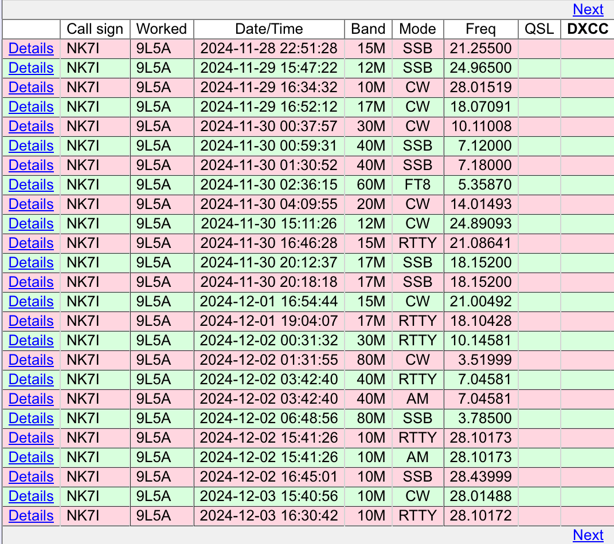

| I agree with Jim. Most, not all, of the pileups are less crowded. But you only have a few days left (8 Sep THEIR time, it’s over) so it’s crunchy time for you. I have made a point this time of only seeking band mode slots that are not already confirmed; it was not my usual take all you can get mode. I still believe in a full frontal assault when an alert (spot, texted) is received; jump in loud and strong (and watching carefully where they are listening, prepositioning your calling freq). Below is page one of the LOTW log; just to give you some ideas of when and where it’s possible for your station (better if you’re an Extra) to get logged. If you don’t have great antennas or a lot of output power; they were VERY loud, many times so there is always hope. There is only one FT8 (60M isn’t shown on LOTW) because it’s the only one I didn’t have. But that is your best shot at getting in their log. Our daytime presents louder signals to the west coast, than nighttime (when they’ve mostly been pretty thin). In a smaller station, YOU have to CHOOSE to be aggressive; track the spotting networks ALL your spare time; use systems like HamAlert (a discussion for another time) and paying close attention (did the livestream light JUST come on for a new band mode slots BEFORE the spotting networks picked it up? You have the posted frequencies from the team; USE that info). The good news is the lessons you learn in a small station, are still useful in a larger station (you’re simply more able to deal better with pileups). DXing is an ACTIVITY, it is not passively sitting by. Be aggressive to gain what you want.  73, Rick nk7i On Dec 5, 2024, at 11:46 AM, Jim Colletto via Chat <chat@ncdxc.org> wrote:
|